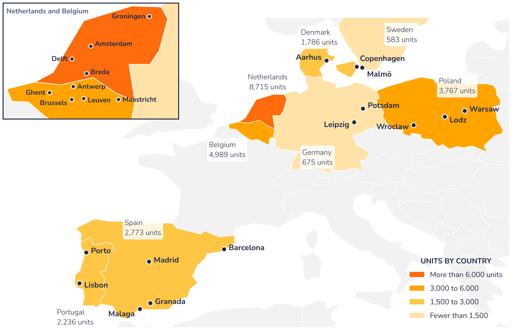

Where Xior's buildings are
Xior owns or is completing about 25,500 student units in 42 cities across eight countries. The Netherlands and Belgium, where the company started, still hold more than half of the units; Poland, Spain and Portugal, the markets management sees as most undersupplied, hold about a third. The split below counts units, including committed projects, at 30 September 2025, the latest breakdown the company has published; the split by value can differ, since rents and values per unit vary widely between cities.

| Country | Units | Share | Cities | Main cities |
|---|---|---|---|---|
| Netherlands | 8,715 | 34% | 16 | Amsterdam, Delft, Groningen, Breda, Maastricht |
| Belgium | 4,989 | 20% | 8 | Leuven, Ghent, Brussels, Antwerp |
| Poland | 3,767 | 15% | 4 | Warsaw, Wroclaw, Lodz |
| Spain | 2,773 | 11% | 6 | Madrid, Barcelona, Granada, Malaga |
| Portugal | 2,236 | 9% | 2 | Lisbon, Porto |
| Denmark | 1,786 | 7% | 3 | Copenhagen, Aarhus |
| Germany | 675 | 3% | 2 | Leipzig, Potsdam |
| Sweden | 583 | 2% | 1 | Malmö |
| Total | 25,524 | 100% | 42 |
Concentration is in regulated markets. About 54% of units are in the Netherlands and Belgium. Dutch rent rules and student-intake policy therefore matter more to the earnings than any single growth market.
Growth is in the south and east. Poland, Spain and Portugal have far fewer purpose-built beds per student than north-western Europe, and Xior's recent openings, such as Warsaw in 2025, are there. These markets bring higher growth but also currency risk in Poland and less market depth if assets must be sold.
The 2022 Basecamp portfolio added Poland, Germany, Denmark and Sweden. Germany and Sweden are small positions of one or two cities, and are the kind of assets a company can sell when it needs to reduce debt.